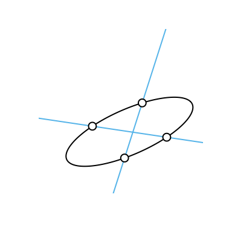
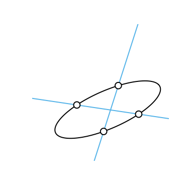

eulerr under the hood
Johan Larsson
2020-03-08
Source:vignettes/under-the-hood.Rmd
under-the-hood.RmdIntroduction
eulerr relies on an extensive machinery to turn user input into a pretty Euler diagram. Little of this requires any tinkering from the user. To make that happen, however, eulerr needs to make several well-formed decisions about the design of the diagram on behalf of the user, which is not a trivial task.
This document outlines the implementation of eulerr from input to output. It is designed to be an evolving documentation on the innards of the program.
Input
Euler diagrams present relationships between sets, wherefore the data must describe these relationships, either directly or indirectly. eulerr allows several alternatives for this data, namely,
- intersections and relative complements \[ A \setminus B = 3 \quad B \setminus A = 2 \quad A \cap B=1, \]
- unions and identities \[ A=4 \quad B=3 \quad A \cap B=1, \]
- a matrix of binary (or boolean) indices, \[ \begin{bmatrix} \mathbf{A} & \mathbf{B}\\ 1 & 0 \\ 1 & 0 \\ 1 & 0 \\ 1 & 1 \\ 0 & 1 \\ 0 & 1, \end{bmatrix} \]
- a list of sample spaces \[ \begin{array}{l} A = \{a,\,b,\,c,\,d\}\\ B = \{a,\,e,\,f,\} \end{array}, \]
-
or a two- or three-way table
\(A\) \(A^\mathsf{c}\) \(B\) 1 2 \(A^\mathsf{c}\) 3 0
As an additional feature for the matrix form, the user may supply a factor variable with which to split the data set before fitting the diagram, which sometimes improves diagrams where the set relationships vary across categories.
Whichever type of input is provided, eulerr will translate it to the first and second types, intersections and relative complements and unions and identities, which will be used in the steps to come.
The Euler diagram is then fit in two steps: first, an initial layout is formed with circles using only the sets’ pairwise relationships. Second, this layout is fine-tuned taking all \(2^N-1\) intersections into consideration.
Initial layout
For our initial layout, we adopt a constrained version of multi-dimensional scaling (MDS) that has been adapted from venn.js (Frederickson 2016), which in turn is a modification of an algorithm used in venneuler (Wilkinson 2012). In it, we consider only the pairwise intersections between sets, attempting to position their respective shapes so as to minimize the difference between the separation between their centers required to obtain an optimal overlap and the actual overlap of the shapes in the diagram.
This problem is unfortunately intractable for ellipses, being that there is an infinite number of ways by which we can position two ellipses to obtain a given overlap. Thus, we restrict ourselves to circles in our initial layout, for which we can use the circle–circle overlap formula to numerically find the required distance, \(d\), for each pairwise relationship.
\[ \begin{aligned} O_{ij} = & r_i^2\arccos\left(\frac{d_{ij}^2 + r_i^2 - r_j^2}{2d_{ij}r_i}\right) + r_j^2\arccos\left(\frac{d_{ij}^2 + r_j^2 - r_i^2}{2d_{ij}r_j}\right) -\\ &\quad \frac{1}{2}\sqrt{(-d_{ij} + r_i + r_j)(d_{ij} + r_i - r_j)(d_{ij} - r_i + r_j)(d_{ij} + r_i + r_j)}, \end{aligned} \]
where \(r_i\) and \(r_j\) are the radii of the circles representing the \(i\)th and \(j\)th sets respectively, \(O_{ij}\) their overlap, and \(d_{ij}\) their separation.

The circle–circle overlap is computed as a function of the discs’ separation (\(d_{ij}\)), radii (\(r_i,r_j\)), and area of overlap (\(O_{ij}\)).
Setting \(r_i = \sqrt{F_i/\pi}\), where \(F_i\) is the size of the \(i\)th set, we are able to obtain \(d\) numerically using the squared difference between \(O\) and the desired overlap as loss function,
\[ \mathcal{L}(d_{ij}) = \left(O_{ij} - (F_i \cap F_j) \right)^2, \quad \text{for } i < j \leq n, \]
which we optimize using optimize()1
For a two-set combination, this is all we need to plot an exact diagram, given that we now have the two circles’ radii and separation and may place the circles arbitrarily as long as their separation, \(d\), remains the same. This is not, however, the case with more than two sets.
With three or more sets, the circles need to be arranged so that they interfere minimally with one another. In some cases, the set configuration allows this to be accomplished flawlessly, but often, compromises must me made. As is often the case in this context, this turns out to be another optimization problem. It can be tackled in many ways; eulerr’s approach is based on a method developed by Frederickson (2015), which the author describes as constrained multi-dimensional scaling.
The algorithm tries to position the circles so that the separation between each pair of circles matches the separation required from the separation equation. If the two sets are disjoint, however, the algorithm is indifferent to the relative locations of those circles as long as they do not intersect. The equivalent applies to subset sets: as long as the circle representing the smaller set remains within the larger circle, their locations are free to vary. In all other cases, the loss function is the residual sums of squares of the optimal separation of circles, \(d\), that we found in the overlap equation, and the actual distance in the layout we are currently exploring.
\[ \mathcal{L}(h,k) = \displaystyle \ell{\sum_{1\leq i<j\leq N}} \begin{cases} 0 & F_i \cap F_j = \emptyset \text{ and } O_{ij} = 0\\ 0 & (F_i \subseteq F_j \text{ or } F_i \supseteq F_j) \text{ and } O_{ij}=0\\ \left(\left(h_i-h_j\right)^2+\left(k_i-k_j\right)^2-d_{ij}^2\right)^2 & \text{otherwise} \\ \end{cases}. \]
The analytical gradient is retrieved as usual by taking the derivative of the loss function,
\[ \vec{\nabla} f(h_i) = \sum_{j=1}^N \begin{cases} \vec{0} & F_i \cap F_j = \emptyset \text{ and } O_{ij} = 0\\ \vec{0} & (F_i \subseteq F_j \text{ or } F_i \supseteq F_j) \text{ and } O_{ij}=0\\ 4\left(h_i-h_j\right)\left(\left(h_i-h_j\right)^2+\left(k_i-k_j\right)^2-d_{ij}^2\right) & \text{otherwise}, \\ \end{cases} \]
where \(\vec{\nabla} f(k_i)\) is found as in the gradient with \(h_i\) swapped for \(k_i\) (and vice versa).
The Hessian for our loss function is given next. However, because the current release of R suffers from a bug2 causing the analytical Hessian to be updated improperly, the current release of eulerr instead relies on the numerical approximation of the Hessian offered by the optimizer.
\[ \small \mathbf{H}(h,k) = \ell{\sum_{1\leq i<j\leq N}} \begin{bmatrix} 4\left(\left(h_i-h_j\right)^2+\left(k_i-k_j\right)^2-d_{ij}^2\right)+8\left(h_i-h_j\right)^2 & \cdots & 8\left(h_i-h_j\right)\left(k_i-k_j\right)\\ \vdots & \ddots & \vdots \\ 8\left(k_i-k_j\right)\left(h_i-h_j\right) & \cdots & 4\left(\left(h_i-h_j\right)^2+\left(k_i-k_j\right)^2-d_{ij}^2\right)+8\left(k_i-k_j\right)^2 \end{bmatrix}. \]
Note that the constraints given in loss and gradients still apply to each element of the Hessian and have been omitted for convenience only.
We optimize the loss function using the nonlinear optimizer nlm() from the R core package stats. The underlying code for nlm was written by Schnabel, Koonatz, and Weiss (1985). It was ported to R by Saikat DebRoy and the R Core team (R Core Team 2017) from a previous FORTRAN to C translation by Richard H. Jones. nlm() consists of a system of Newton-type algorithms and performs well for difficult problems (Nash 2014).
The initial layout outlined above will sometimes turn up perfect diagrams, but only reliably so when the diagram is completely determined by its pairwise intersections. More pertinently, we have not yet considered the higher-order intersections in our algorithm and neither have we approached the problem of using ellipses—as we set out to do.
Final layout
We now need to account for all the sets’ intersections and, consequently, all the overlaps in the diagram. The goal is to map each area uniquely to a subset of the data from the input and for this purpose we will use the sets’ intersections and the relative complements of these intersections, for which we will use the shorthand \(\omega\). We introduced this form in the input section, but now define it rigorously.
For a family of N sets, \(F = F_1, F_2, \dots, F_N\), and their \(n=2^N-1\) intersections, we define \(\omega\) as the intersections of these sets and their relative complements, such that
\[ \begin{aligned} \omega_{1} & = F_1 \setminus \bigcap_{i=2}^N F_i \\ \omega_{2} & = \bigcap_{i=1}^2 F_i \setminus \bigcap_{i=3}^{N} F_i\\ \vdots & = \vdots \\ \omega_n & = \bigcap_{i=1}^{N}F_i \end{aligned} \]
with
\[ \sum_{i = 1}^n \omega_i = \bigcup_{j=1}^N F_i. \]
Analogously to \(\omega\), we also introduce the \(\&\)-operator, such that
\[ F_i \& F_j = (F_i \cap F_j)\setminus (F_i \cap F_j)^\textsf{c}. \]
The fitted diagram’s area-equivalents for \(\omega\) will be defined as \(A\), so that an exact diagram requires that \(\omega_i = A_i\) for \(i=1,2,\dots,2^N-1\), where \(N\) is the number of sets in the input.
In our initial configuration, we restricted ourselves to circles but now extend ourselves also to ellipses. From now on, we abandon the practice of treating circles separately—they are only a special case of ellipses, and, hence, everything that applies to an ellipse does so equally for a circle.
Intersecting ellipses
We now need the ellipses’ points of intersections. eulerr’s approach to this is outlined in (Richter-Gebert 2011) and based in projective, as opposed to Euclidean, geometry.
To collect all the intersection points, we naturally need only to consider two ellipses at a time. The canonical form of an ellipse is given by
\[ \frac{\left[ (x-h)\cos{\phi}+(y-k)\sin{\phi} \right]^2}{a^2}+ \frac{\left[(x-h) \sin{\phi}-(y-k) \cos{\phi}\right]^2}{b^2} = 1, \]
where \(\phi\) is the counter-clockwise angle from the positive x-axis to the semi-major axis \(a\), \(b\) is the semi-minor axis, and \(h, k\) are the x- and y-coordinates, respectively, of ellipse’s center.

A rotated ellipse with semimajor axis \(a\), semiminor axis \(b\), rotation \(\phi\), and center \(h,k\).
However, because an ellipse is a conic3 it can be represented in quadric form,
\[ Ax^2 + Bxy + Cy^2 + Dx + Ey + F = 0 \]
that in turn can be represented as a matrix,
\[ \begin{bmatrix} A & B/2 & D/2 \\ B/2 & C & E/2 \\ D/2 & E/2 & F \end{bmatrix}, \]
which is the form we need to intersect our ellipses. We now proceed to form three degenerate conics from a linear combination of the two ellipses we wish to intersect, split one of these degenerate conics into two lines, and intersect one of the ellipses with these lines, yielding 0 to 4 intersection points points.

 
The process used to intersect two ellipses, here yielding four points. This figure was inspired by an example from Richter–Gebert 2011.
Overlap areas
Using the intersection points of a set of ellipses that we retrieved in, we can now find the overlap of these ellipses. We are only interested in the points that are contained within all of these ellipses, which together form a geometric shape consisting of a convex polygon, the sides of which are made up of straight lines between consecutive points, and a set of elliptical arcs—one for each pair of points.
The overlap area between three ellipses is the sum of a convex polygon (in grey) and 2–3 ellipse segments (in blue).
We continue by ordering the points around their centroid. It is then trivial to find the area of the polygon section since it is always convex. Now, because each elliptical segment is formed from the arcs that connect successive points, we can establish the segments’ areas algorithmically (Eberly 2016). For each ellipse and its related pair of points (located at angles \(\theta_0\) and \(\theta_1\) from the semimajor axis), we proceed to find its area by
- centering the ellipse at \((0, 0)\),
- normalizing its rotation, which is not needed to compute the area,
- integrating the ellipse over [\(0,\theta_0\)] and [\(0,\theta_1\)], producing elliptical sectors \(F(\theta_0)\) and \(F(\theta_1)\),
- subtracting the smaller (\(F(\theta_0\))) of these sectors from the larger (\(F(\theta_0\)), and
- subtracting the triangle section to finally find the segment area, \[ F(\theta_1) - F(\theta_0) - \frac{1}{2}\left|x_1y_0 - x_0y_1\right|, \] where \[ F(\theta) = \frac{a}{b}\left[ \theta - \arctan{\left(\frac{(b - a)\sin{2\theta}}{b + a +(b - a )\cos{2\theta}} \right)}\right]. \]
This procedure is illustrated in the following figure. Note that there are situations where this algorithm is altered, such that when the sector angle ranges beyond \(\pi\)—we refer the interested reader to Eberly (2016).
The elliptical segment in blue is found by first subtracting the elliptical sector from \((a, 0)\) to \(\theta_0\) from the one from \((a, 0)\) to \(\theta_1\) and then subtracting the triangle part (in grey).
Finally, the area of the overlap is then obtained by adding the area of the polygon and all the elliptical arcs together.
Note that this does not yet give us the areas that we require, namely \(A\): the area-equivalents to the set intersections and relative complements from our definition of the intersections. For this, we must decompose the overlap areas so that each area maps uniquely to a subspace of the set configuration. This, however, is simply a matter of transversing down the hierarchy of overlaps and subtracting the higher-order overlaps from the lower-order ones. For a three-set relationship of sets \(A\), \(B\), and \(C\), for instance, this means subtracting the \(A\cap B \cap C\) overlap from the \(A \cap B\) one to retrieve the equivalent of \((A \cap B) \setminus C\).
The exact algorithm may in rare instances4, break down, the culprit being numerical precision issues that occur when ellipses are tangent or completely overlap. In these cases, the algorithm will approximate the area of the involved overlap by
- spreading points across the ellipses using Vogel’s method.
- identifying the points that are inside the intersection via the inequality \[ \begin{aligned} &\frac{\left[(x-h)\cos{\phi}+(y-k)\sin{\phi} \right]^2}{a^2} + &\quad \frac{\left[(x-h) \sin{\phi}-(y-k)\cos{\phi}\right]^2}{b^2} < 1, \end{aligned} \] where \(x\) and \(y\) are the coordinates of the sampled points, and finally
- approximating the area by multiplying the proportion of points inside the overlap with the area of the ellipse.
With this in place, we are now able to compute the areas of all intersections and their relative complements, \(\omega\), up to numerical precision.
Final optimization
We feed the initial layout to the optimizer—once again we employ nlm() from stats but now also provide the option to use ellipses rather than circles, allowing the “circles” to rotate and the relation between the semiaxes to vary, altogether rendering five parameters to optimize per set and ellipse (or three if we restrict ourselves to circles). For each iteration of the optimizer, the areas of all intersections are analyzed and a measure of loss returned. The loss we use is the same as in venneuler (Frederickson 2016), namely the residual sums of squares.
If the fitted diagram is still inexact after the procedure, we offer a final step in which we pass the parameters on to a last-ditch optimizer. The weapon of choice5 is stress (Wilkinson 2012), which is also the loss metric we use in our final optimization step and is used in venneuler, as well as diagError (Micallef and Rodgers 2014), which is used by eulerAPE.
The stress metric is not easily grasped but can be transformed into a rough analogue of the correlation coefficient via \(r = \sqrt{1-\text{stress}^2}\).
diagError, meanwhile, is given by
\[ {\max_{i = 1, 2, \dots, n}}\left| \frac{\omega_i}{\sum_{i=1}^n \omega_i} - \frac{A_i}{\sum_{i=1}^n A_i} \right|, \]
which is the maximum absolute difference of the proportion of any \(\omega\) to the respective unique area of the diagram.
References
Eberly, David. 2016. “The Area of Intersecting Ellipses.” Geometric Tools. https://www.geometrictools.com/Documentation/AreaIntersectingEllipses.pdf.
Frederickson, Ben. 2015. “Venn Diagrams with D3.Js.” http://www.benfrederickson.com/venn-diagrams-with-d3.js/.
———. 2016. “Venn.Js Area Proportional Venn and Euler Diagrams in JavaScript.”
Micallef, Luana, and Peter Rodgers. 2014. “eulerAPE: Drawing Area-Proportional 3-Venn Diagrams Using Ellipses.” PLOS ONE 9 (7): e101717. https://doi.org/10.1371/journal.pone.0101717.
Nash, John C. 2014. Nonlinear Parameter Optimization Using R Tools. 1st ed. Chichester, West Sussex: Wiley.
R Core Team. 2017. R: A Language and Environment for Statistical Computing. Vienna, Austria: R Foundation for Statistical Computing. https://www.R-project.org/.
Richter-Gebert, Jurgen. 2011. Perspectives on Projective Geometry: A Guided Tour Through Real and Complex Geometry. 1st ed. Berlin, Germany: Springer.
Schnabel, Robert B., John E. Koonatz, and Barry E. Weiss. 1985. “A Modular System of Algorithms for Unconstrained Minimization.” ACM Trans Math Softw 11 (4): 419–40. https://doi.org/10.1145/6187.6192.
Wilkinson, L. 2012. “Exact and Approximate Area-Proportional Circular Venn and Euler Diagrams.” IEEE Transactions on Visualization and Computer Graphics 18 (2): 321–31. https://doi.org/10.1109/TVCG.2011.56.
According to the documentation,
optimize()consists of a “combination of golden section search and successive parabolic interpolation.” from stats.↩The current development version of R features a fix for this bug; eulerr will be updated to use the analytical Hessian as soon as it is introduced in a stable version of R.↩
The circle, parabola, and hyperbola are the other types of conics.↩
1 out of approximately 7000 in our simulations.↩
We conducted thorough benchmarking, that we opt not to report here, to decide upon an algorithm for this step.↩